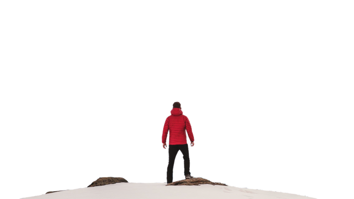
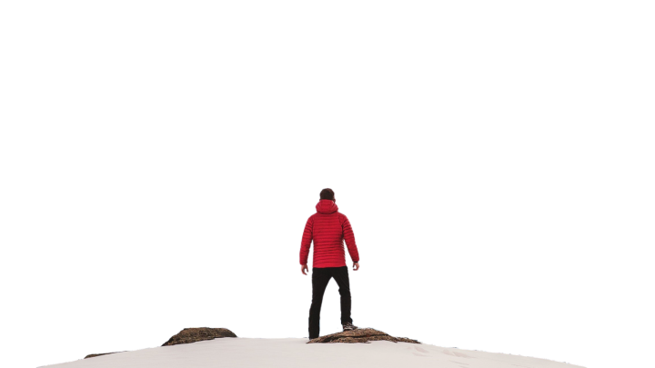

ADVENTURE
Adventure time
Adventurous sports like biking, paragliding, and surfing epitomize the human desire for exploration, adrenaline, and connection with nature. Biking enthusiasts embark on exhilarating journeys across varied terrain, from rugged mountains to dense forests, pushing their limits while immersing themselves in the beauty of natural landscapes. Whether conquering challenging trails or descending heart-pounding slopes, cyclists experience a profound sense of freedom and accomplishment as they navigate the rugged terrain with skill and determination.
Paragliding offers a unique perspective of the world as participants soar through the sky, harnessing the power of wind currents to glide effortlessly above stunning vistas. It's an awe-inspiring experience that combines the thrill of flight with the tranquility of floating among the clouds. Surfers, on the other hand, harness the raw energy of the ocean, riding powerful waves with grace and precision. From the moment they paddle out into the surf to the exhilarating rush of catching the perfect wave, surfers are in tune with the ever-changing forces of nature, finding solace and excitement in the ocean's embrace. These adventurous pursuits not only test physical limits but also foster a deep connection with the natural world, inspiring a lifelong passion for adventure and exploration.
BIKING
Biking is a dynamic pursuit that offers both physical challenge and spiritual fulfillment. As riders pedal through varied terrain, from rugged mountain paths to serene countryside roads, they experience an intimate connection with nature. The rhythmic motion of cycling, coupled with the exhilarating rush of wind against the skin, creates a sense of liberation and empowerment unmatched by any other activity.
Moreover, biking fosters a sense of community among enthusiasts who share a passion for exploration and adventure. Whether embarking on solo journeys of self-discovery or joining group rides with like-minded individuals, cyclists find camaraderie and support in their pursuit of new horizons. Beyond its physical benefits, biking promotes mental clarity and emotional well-being, offering a therapeutic escape from the stresses of daily life. In essence, biking is not just a sport but a lifestyle—a journey of self-discovery and connection with the world around us.
PARA GLIDING
Paragliding is a breathtaking adventure that allows individuals to defy gravity and soar through the skies like birds. Suspended beneath a canopy-like parachute, participants experience the thrill of flight as they glide gracefully through the air, propelled by wind currents and guided by skillful maneuvers. The sensation of weightlessness combined with panoramic views of the landscape below creates an unparalleled sense of freedom and exhilaration.
Beyond its adrenaline-inducing appeal, paragliding offers a unique perspective of the world, allowing participants to gain a newfound appreciation for the beauty and vastness of nature. From towering mountain peaks to coastal cliffs and lush valleys, paragliders have the opportunity to explore stunning vistas from a perspective few ever experience. Additionally, the sport fosters a deep sense of connection with the natural elements, as pilots learn to navigate wind patterns and thermals with precision and intuition. Paragliding is not merely a recreational activity; it's a transformative journey that challenges boundaries, ignites passion, and leaves participants with memories that last a lifetime..
SURFING
Surfing is an exhilarating water sport that offers participants a unique blend of physical challenge and spiritual connection with the ocean. From the moment surfers paddle out into the lineup to the thrill of catching and riding a wave, every aspect of surfing is infused with excitement and adrenaline. The rhythmic dance between surfer and wave requires skill, balance, and a deep understanding of the ocean's ever-changing dynamics, creating an immersive experience that transcends mere athleticism.
Beyond its physical demands, surfing provides a profound sense of connection with nature, as participants find themselves immersed in the raw power and beauty of the ocean. Whether riding glassy barrels or carving graceful turns on open faces, surfers develop a deep respect for the natural world and its ability to inspire, challenge, and rejuvenate. Moreover, surfing fosters a strong sense of community among enthusiasts, who gather at surf breaks around the world to share waves, stories, and a love for the ocean. In essence, surfing is more than just a sport—it's a way of life that celebrates the harmony between humans and the sea.